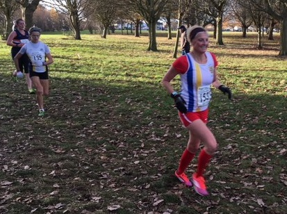
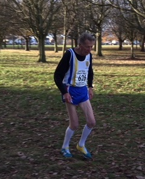

Four Sevenoaks AC runners tackled the fourth match of the Kent Cross Country League at Danson Park, Bexleyheath on 25th November. Ollie Brownridge kept up his excellent form in the U13 boys race with 13th place, while Richard Pitcairn-Knowles was 5th in the M70 race - and first M80. Organiser James Graham was in attendance even though there was no senior men's event on the day. Jacqui O'Reilly had another good run in 23rd in the women's race, and was this time supported by Grace Manzotti, competing in the league for the first time, in 110th. The two comprised the largest SAC contingent in the senior women's for many years!
The full results are here.